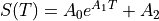
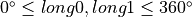
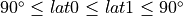
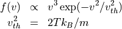
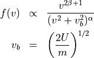
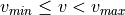
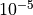

Input File Format¶
Input files are plain text files in the form:
category.parameter = setting
Lines in the input file that can not be parsed in this manner are ignored. Comments can be entered with a “#”. Everything in a line after a comment character is ignored. There are currently eight categories that can be set: geometry, surface_interaction, forces, spatialdist, speeddist, angulardist, loss_information, and options. The required parameters for each category are not fixed; i.e., which parameters are needed depends somewhat on the settings chosen. Below, all possible parameters for each category are defined. Input files are case insensitive.
Geometry¶
The geometry can be defined either with a timestamp (i.e., determine the geometry values at a defined epoch), or without a timestamp (i.e., by specifying important values). If running the model from MESSENGERdata.model(), the geometry is determined from from the data and geometry settings in the input file are ignored.
- geometry.center [Required]
Central object for the model.
- geometry.startpoint [Optional]
Object from which packets are ejected. This must be an object in the planetary system (the planet or one of its moons). If the
geometry.planet == Sun, the starting point must either be the Sun or a planet. Default = geometry.center- geometry.include [Optional]
Objects to include in calculations given as comma-separated list of bodies in the planetary system. For example, if
geometry.objects = Jupiter, Io, the gravity effects of the other moons would not be included, nor would collisions with their surfaces. Default = geometry.planet, geometry.startpoint
Geometry With Time Stamp¶
- geometry.modeltime [Required]
Time at which the model is simulated (model end time) in a format that can be read by astropy.time.Time (YYYY-MM-DD HH:MM:SS.S or YYYY-MM-DDTHH:MM:SS.S are best). The true anomaly angle, subsolar point, and orbital position of all objects are determined using the SpiceyPy python wrapper for the SPICE toolkit (Annex et al., (2020). SpiceyPy: a Pythonic Wrapper for the SPICE Toolkit. Journal of Open Source Software, 5(46), 2050.
Geometry Without Time Stamp¶
Warning
The coordinate transformations for GeometryNoTime are not set up correctly at the moment.
- geometry.TAA [Optional]
Planet’s True Anomaly Angle in degrees. This is used to determine the planet’s distance and radial velocity relative to the Sun. Default = 0º
- geometry.phi [Required if satellites are included in the simulation]
Orbital phase of each included satellite relative to the Sun in degrees given as a comma-separated list. Measured from 0º to 360º where 0º is superior conjunction and 90º is over the planet’s dawn terminator. The number of values must be equal to the number of non-planet objects included.
- geometry.subsolarpoint [Optional]
The sub-solar longitude and latitude over the planet’s surface in degrees given as comma-separated values. For Jupiter, use System-III central meridian longitude. Sub-solar latitude isn’t used for anything currently, but could in the future be used to include effects of the planetary system’s tilt relative to the Sun.
- geometry.dtaa [Optional]
Tolerance for true anomaly differences in model searches in degrees. Default = 2º
SurfaceInteraction¶
The SurfaceInteraction class defines interactions between packets and body surfaces. The available parameters depend on the interactions desired. If no values are provided, 100% sticking is assumed.
Constant Sticking Coefficient¶
surfaceinteracction.type [Default = constant]
- surfaceinteraction.stickcoef [Default = 1]
Sticking coefficient to be used uniformly across the body’s surface. For complete surface sticking, set
surfaceinteraction.stickcoef = 1.. For no sticking (100% of packets are reemitted from the surface, setsurfaceinteraction.stickcoef = 0.- surfaceinteraction.accomfactor [Required if stickcoef < 1]
Surface accommodation factor. 1 = Fully accommodated to local surface temperature. 0 = Elastic scattering.
Temperature Dependent Sticking Coefficient¶
Note
This has not been implemented yet.
The sticking coefficient follows the functional form (Yakshinskiy & Madey 2005):

where the coefficients are species dependent. For Na,
Surface accommodation factor. 1 = Fully accommodated to local surface temperature. 0 = Elastic reemission.
Sticking Coefficient from a Surface Map¶
Note
This has not been implemented yet.
Forces¶
The Forces class determines which forces are included in the simulation. Currently, the model only includes gravity and radiation pressure. If no forces are set in the input file both are included by default.
- forces.gravity [Optional]
Default = True
- forces.radpres [Optional]
Default = True
SpatialDist¶
The SpatialDist class specifies the initial spatial distribution of packets in the system. Currently, three spatial distribution types are defined, all of which place packets over the surface (or exobase) of geometry.StartingPoint. More distributions may defined upon request.
Three coordinate systems (frames) are available for each body: the body-fixed IAU frame, a SOLAR frame with the z-axis aligned with the rotation axis and the x-axis directed toward the Sun, and a SOLARFIXED frame with the x-axis pointed directly at the Sun. These are described further at Planetary Coordinate Systems and System Geometry.
Uniform Surface¶
Distribute packets randomly across a region of the surface or exobase with a uniform probability distribution.
- spatialdist.type [Required]
Set spatialdist.type = uniform.
- spatialdist.longitude [Optional]
Longitude range on the surface to place packets in degrees given as long0, long1 where . If long0 > long1, the region wraps around. Default = 0, 360
- spatialdist.latitude [Optional]
Latitude range on the surface to place packets in degrees given as lat0, lat1 where . Default = -90, 90
- spatialdist.exobase [Optional]
Location of the exobase in units of the starting point’s radius. Default = 1.
- spatialdist.frame [Optional]
SPICE frame to use. Options are “IAU”, “SOLAR”, “SOLARFIXED”. The correct body is added to the name for use in the SPICE toolkit. Default = SOLAR.
To eject all packets from a single point, set long0 = long1 and lat0 = lat1; i.e., to eject all packets from the sub-solar point of a planet, set:
spatialdist.longitude = 0,0
spatialdist.latitude = 0,0
spatialdist.frame = SolarFixed
Golden Spiral Spatial Distribution¶
This approximates a regular grid of packets on a sphere using the global spiral method implemented in astropy.coordinates.
- spatialdist.exobase [Optional]
Location of the exobase in units of the starting point’s radius. Default = 1.
Spatial Distribution from a Surface Map¶
Note
This has not been set up yet.
Distribute packets according to a probability distribution given by a pre-defined surface map.
- spatialdist.type [Required]
Set spatialdist.type = surface map.
- spatialdist.mapfile [Optional]
Set this to a pickle or IDL savefile containing the map information, or set to ‘default’ to use the default surface composition map.
The sourcemap is saved as a dictionary with the fields:
longitude: longitude axis in degrees
latitude: latitude axis in degrees
abundance: surface abundance map
coordinate_system: planet-fixed, solar-fixed, or moon-fixed
If not given, the default, planet-fixed surface composition map is used.
- spatialdist.exobase [Optional]
Location of the exobase in units of the starting point’s radius. Default = 1.
Surface-Spot Spatial Distribution¶
Note
This has not been set up yet.
Distribute packets with a spatial distribution that drops off exponentially from a central point.
- spatialdist.type [Required]
Set spatialdist.type = surface spot.
- spatialdist.longitude [Required]
Longitude of the source center in degrees.
- spatialdist.latitude [Required]
Latitude of the soruce center in degrees.
- spatialdist.sigma [Required]
Angular e-folding width of the source in degrees.
- spatialdist.exobase [Optional]
Location of the exobase in units of the starting point’s radius. Default = 1.
SpeedDist¶
The SpeedDist class defines the one-dimensional initial speed distribution of the packets. Currently implemented speed distributions are Maxwellian, sputtering, and flat. More can be added upon request.
Gaussian (Normal) distribution¶
Note
This has not been set up yet.
Packets speeds are chosen from a normal distribution. See `numpy.random.normal for more information on the implementation.
- speeddist.type [Required]
Set speeddist.type = gaussian
- speeddist.vprob [Required]
Mean speed of the distribution in km/s.
- speeddist.sigma [Required]
Standard deviation of the distribution in km/s.
Maxwellian Distribution¶

- speeddist.type [Required]
Set speeddist.type = maxwellian
- speeddist.temperature [Required]
Temperature of the distribution in K. Set speeddist.temperature = 0 to use a pre-defined surface temperature map (Not implemented yet).
Sputtering Distribution¶
Packet speeds are chosen from a sputtering distribution in the form:

- speeddist.type [Required]
Set speeddist.type = sputtering
- speeddist.alpha [Required]
 parameter.
parameter.- speeddist.beta [Required]
 parameter.
parameter.- speeddist.U [Required]
Surface binding energy in eV.
Flat Distribution¶
Chooses the initial speed uniformly with .
- speeddist.type [Required]
Set speeddist.type = flat
- speeddist.vmin [Optional]
Minimum speed in km/s. Default = 0 km/s
- speeddist.vmax [Optional]
Maximum speed in km/s. Default = 10 km/s
AngularDist¶
The AngularDist class defines the initial angular distribution of packets. The options are radial and isotropic. More distributions can be added upon request. If not given, an isotropic distribution into the outward facing hemisphere is assumed.
Radial Distribution¶
Packets are ejected radially from the surface.
- angulardist.type [Required]
Set angulardist.type = radial.
Isotropic Distribution¶
Packets are ejected isotropically into the outward facing hemisphere (if the packets are starting from the surface) or the full hemisphere. angulardist.type is not given, an isotropic distribution is assumed and all other options are ignored (i.e., altitude and azimuth can not be specified).
- angulardist.type [Optional]
Set angulardist.type = isotropic.
- angulardist.altitude [Optional]
Used to limit the altitude range of the distribution. Given as a comma-separated list of altmin, altmax in degrees measured from the surface tangent to the surface normal.
- angulardist.azimuth [Optional]
Used to limit the azimuth range of the distribution. Given as a comma-separated list of az0, az1 in degrees. This should be measured with azimuth = 0 rad pointing to north, but I’m not sure if it actually works. Use of this option is not recommended.
Loss Information¶
The LossInformation class configures the processes responsible for loss not due to collisions with the surface. Three processes can be included: photoionization or dissociation, electron-impact ionization or dissociation, and charge exchange. The physical processes and determination of relevant plasma parameters are described at Neutral Loss Rates.
- constant_lifetime [Optional]
Assigns a constant lifetime everywhere in the system. Default=False (constant not applied). If this is set, it provides an loss floor; i.e., other loss mechanisms can still be included with the loss rates additive.
- photoionization [Optional]
Set to True to include photoionization. Default = True
- photo_lifetime [Optional]
If 0, then uses the calculated photoionzitaion rate. If >0, sets the photoionization lifetime to that value in seconds. The photoionization rate is 1/photoionizaion lifetime. Default = 0
- photo_factor [Optional]
Constant factor by which to modify the photoionization rate. Useful for testing the effect of changed photoionization rates. Default = 1
- electron_impact [Optional]
Set to True to include loss due to electron impacts. Default = True for planets with known plasma parameters, False otherwise.
- eimp_factor [Optional]
Constant factor by which to modify the electron impact loss rates. Default = 1
- charge_exchange [Optional]
Set to True to include charge exchange. Default = True for planets with known plasma parameters, False otherwise.
- chx_factor [Optional]
Constant factor by which to modify the charge exchange rates. Default = 1
Options¶
The Options class sets runtime options that don’t fit into other categories.
The total simulated runtime for the model. Generally chosen to be several times the lifetime of the species.
- options.runtime [Required]
Total simulation run time in seconds.
- options.species [Required]
The species to be simulated.
- options.outer_edge [Optional]
Distance from geometry.startpoint to simulate in object radii. Default = infinite; i.e., no outer edge is given to the simulation.
- options.step_size [Optional]
Step size in seconds. If 0, uses the adaptive step size integrator. Otherwise it uses the constant step size integrator. Default = 0.
- options.resolution [Optional]
Required precision for the adaptive step size integrator. Default = .
- options.start_together [Optional]
If using the adaptive step size integrator, options.start_together = True starts all packets at the same time. Otherwise, start times are randomly distributed between the start and end of the simulation. Default = False
- options.random_seed [Optional]
Seed for the random number generator. Default = None